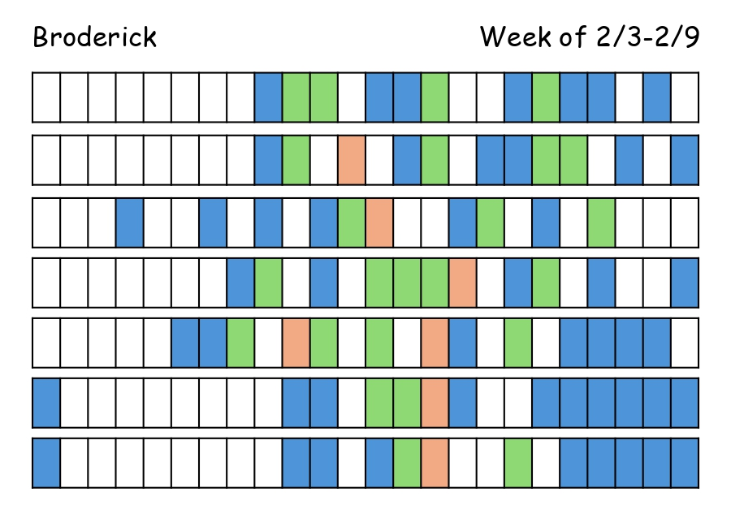
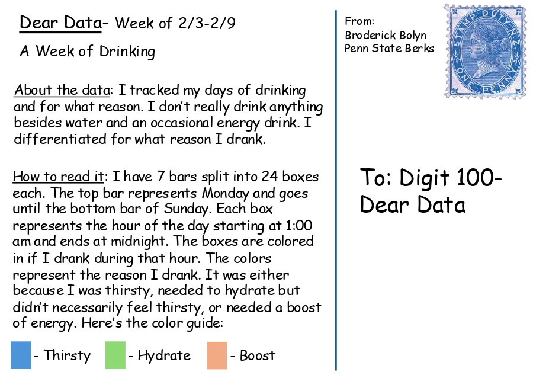

I am a 4th-year Mechanical Engineering student at Penn State Berks. This website serves as a portfolio of my digital projects, coursework, and professional experience. Here, you can explore my work, see my resume, and learn more about my journey.
View my digital projects from various coursework, including data visualization and technical writing.
See my academic work, including technical and engineering-based projects.
Check out my skills, experience, and education in Mechanical Engineering.
Learn more about my background, hobbies, and interests outside of academics.
One of my recent projects involved creating a data visualization inspired by "Dear Data." I tracked my water intake over a week and represented them visually.
 